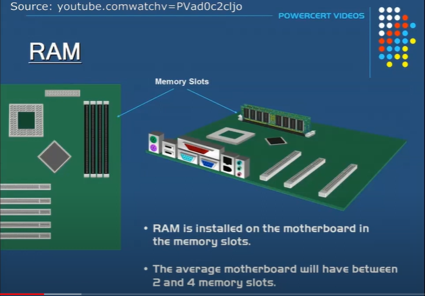
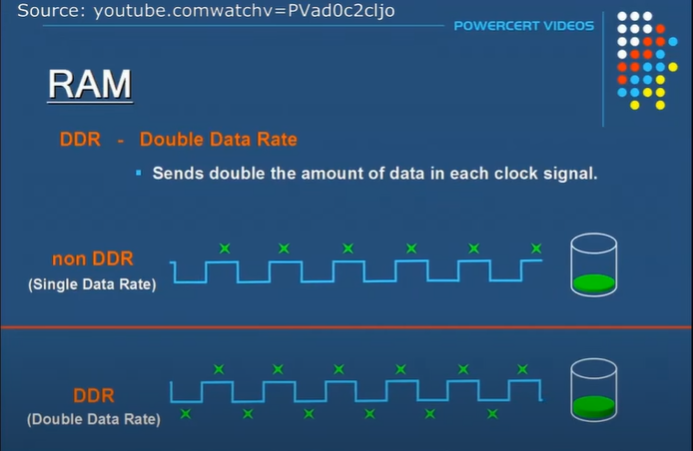

Ringkasan Video Tentang RAM
Pada video ini membahas tentang salah satu bagian terpenting dari sebuah komputer dan tetang memori utama atau penyimpanan sementara yang disebut RAM (Random Memory Access).
DIMM (Dual In-Line Memory Module)
RAM disimpan di Motherboard dalam modul memori yang disebut DIMM (Dual Inline Memory Module). DIMM adalah Dual Inline Module karena memiliki dua baris independen pin ini satu disetiap sisi. Modul memori DIMM memiliki 168, 184, 240, atau 288 pin.
Kemudian DIMMs dipasang pada Motherboard dalam slot memori. Motherboard dapat memiliki berbagai jumlah slot memori yang bervariasi. Motherboard rata-rata memiliki antara 2 dan 4 slot memori.
Problem dan Cara Mengatasinya
Agar data atau program dapat berjalan di komputer, maka perlu dimuat ke RAM. Data atau program disimpan terlebih dahulu di hard drive kemudian dari hard drive dimuat ke RAM. Setelah dimuat ke Ram, CPU dapat mengakses data atau menjalankan program sekarang. Jika memori terlalu rendah mungkin tidak dapat menyimpan atau menampung semua data yang dibutuhkan CPU dan bila hal ini terjadi, maka beberapa data lain yang harus disimpan di hard drive akan lebih lambat untuk mengimbangi rendahnya memori. Alih-alih data yang berpindah dari RAM ke CPU harus melakukan kerja ekstra dengan kembali ke hard drive dan ketika hal ini terjadi dapat memperlambat komputer. Jadi, untuk mengatasinya adalah menambah jumlah RAM pada komputer dan meningkatkan memori, lebih banyak data yang dapat dimuat ke Ram lebih cepat tanpa perlu terus mengakses hard drive yang lebih lambat dan hasilnya adalah kinerja komputer lebih cepat. Inilah mengapa komputer dengan RAM lebih banyak bekerja lebih cepat daripada komputer dengan RAM lebih sedikit. RAM memerlukan daya listrik yang konstan utnuk menyimpan data dan jika listrik dimatikan maka data terhapus.
Beberapa Jenis RAM
RAM juga tersedia dalam berbagai jenis sebagai berikut:
-
DRAM (Dynamic RAM)
DRAM adalah memori yang berisi kapasitor. Kapasitor seperti ember kecil yang menyimpan listrik dan kapasitor ini yang memegang bit informasi seperti 1 dan 0 karena itulah cara komputer membaca data yang bernilai 1 atau 0. Karena DRAM memiliki kapasitor, mereka harus di-refresh dengan listrik secara terus-menerus karena kapasitor tidak menahan muatan sangat lama mereka terus-menerus bocor. Kapasitor harus di refresh secara dinamis jika tidak, akan melupakan informasi yg dipegang.
-
SDRAM (Synchronous Dynamic RAM)
Jenis RAM ini adalah yang digunakan di DIMM RAM saat ini. SDRAM juga memiliki kapasitor sepeti DRAM tetapi perbedaan antara SDRAM adalah kecepatan. Teknologi DRAM lama beroperasi secara tidak sinkron dengan jam sistem yang artinya berjalan lebih lambat daripada jam sistem karena sinyalnya tidak terkoordinasi dengannya sedangkan SDRAM berjalan selaras dengan sistem jam itulah mengapa lebih cepat dari DRAM. Semua sinyal terikat ke jam sistem untuk pengaturan waktu yang lebih baik.
SIMM (Single In-Line Memory Module)
Sebelum ada DIMM, ada modul RAM lama yang disebut SIMM. SIMM memiliki jalur data 32 bit yang berarti mereka dapat mentransfer data pada 32 bit sekaligus. Itulah mengapa DIMM lebih cepat daripada SIMM karena dapat mentransfer duakali lipat jumlah data per jam siklus.
RIMM (Rambus In-Line Memory Module)
Jenis memori lain yang disebut RDRAM dikembangkan oleh Rimbus.Inc adalah RIMM (Rambus In-Line Memory Module) . RIMM memiliki 184 pin dan terlihat dan terlihat mirip dengan DIMMs. Pada tahun 1999, RIMM sebuah terobosan dalam kecepatan memori tetapi dengan cepat tertinggal karena kemajuan teknologi dalam DIMMs. Ketika RDRAM rilis pada tahun 1999, RDRAM berjalan dengan kecepatan 800MHz yang sangat lebih cepat dari SDRAM dengan kecepatan 133MHz pada waktu itu. Meskipun itu jauh lebih cepat daripada SDRAM, RDRAM hanya memiliki 2 byte wide bus dibandingkan dengan SDRAM yang memiliki 8 byte wide bus.
DDR dan Non DDR
Karena teknologi meningkat dan kecepatan processor dan bus menjadi lebih cepat. Teknologi ramp dikembangkan untuk mengimbangi kecepatan komputer yang lebih cepat ini. Teknologi yang lebih baru disebut DDR (Double Data Rate) . DDR mengirimkan dua kali lipat jumlah data dalam setiap siklus clock dibandingkan dengan non DDR. Non DDR (Single Data Rate) hanya menggunakan edge sinyal clock yang meningkat untuk mentrasnfer data tetapi DDR menggunakan naik dan turun tepi sinyal clock untukm mengirim data yang memberi DDR kemampuan untuk mengirim dua kali jumlah data.
ECC (Error Correcting Code)
Ada saat korupsi data tidak dapat ditoleransi, misalnya di server. Server dimaksudkan untuk dapat berdiri dan berjalan setiap saat dan beberapa server tidak mampu offline karen alasan seperti server itu mengontrol data keungan medis darurat atau data pemerinta. Server initidak bisa turun karena alasan apapun dan itulah mengapa beberapa modul RAM memiliki ECC. ECC adlah pendeteksi jika data diproses dengan benar oleh modul memori dan membuat koreksi jika diperlukan.
Video Source:
https://youtu.be/D-AdqniwiKg?si=XV12r3_fugGSXJ-9

Dinda Putri Ramadani
Hai!!! Perkenalkan saya Dinda Putri Ramadani salah satu mahasiswi dari Universitas Dinamika Bangsa Jambi. Blog ini untuk memenuhi tugas Sistem Operasi yang diberikan oleh dosen pembimbing saya. Terima Kasih!!! xixixi